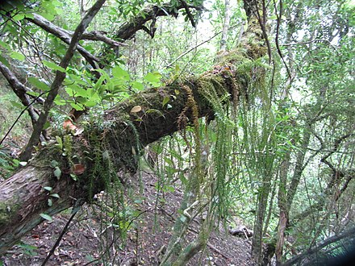

Trachylomataceae
Trachyloma Moss Family
The Trachylomataceae family consists of pleurocarpous mosses typically found in humid forests of the Southern Hemisphere and tropics. They often grow as epiphytes or on rocks, forming mats or wefts. Key characteristics frequently include papillose leaf cells (giving a dull appearance) and a single costa ending below the leaf apex.
Overview
Trachylomataceae is a family of pleurocarpous mosses whose phylogenetic placement has been debated, sometimes placed in its own order (Trachylomatales) or associated with orders like Lembophyllales or Hypnales. The family is primarily distributed across the Southern Hemisphere (Australasia, southern South America, southern Africa) and extends into tropical regions of Southeast Asia and the Pacific islands.
Members of this family typically inhabit moist, shaded forest environments, growing on tree trunks, branches, twigs, leaves, or rocks. They often form noticeable mats or pendent strands. Identification usually relies on a combination of their pleurocarpous habit, leaf shape, the presence and nature of papillae on the leaf cells (often requiring magnification), costa length, and peristome details.
Quick Facts
- Scientific Name: Trachylomataceae W.R. Buck & Vitt
- Common Name: Trachyloma Moss Family (no single widely accepted common name)
- Number of Genera: Approximately 6-8 (e.g., Trachyloma, Lepyrodon, Braithwaitea)
- Number of Species: Approximately 20-30
- Distribution: Primarily Southern Hemisphere temperate and tropical regions (esp. Australasia, SE Asia, Pacific, S. America, Africa).
- Evolutionary Group: Bryophytes - Mosses (Class: Bryopsida, Order: Trachylomatales / Lembophyllales / Hypnales - placement varies)
Key Characteristics
Growth Form and Habit
Plants are pleurocarpous, forming loose to dense mats or wefts, sometimes pendent from branches. Stems are creeping, ascending, or pendent, typically pinnately or irregularly branched, often appearing somewhat stiff or wiry. Color ranges from green to yellowish-green or brownish.
Leaves
Leaves are typically crowded, erect-spreading to spreading, often ovate to lanceolate, and usually acuminate (tapering to a point). They can be symmetric or asymmetric. Margins are frequently serrated or toothed, at least in the upper part. The costa (midrib) is single, usually relatively strong but typically ending well below the leaf apex. A key feature is that the laminal (leaf blade) cells are often (though not always) papillose. Papillae can be single or multiple per cell, located over the cell lumen or walls, contributing to a dull or opaque leaf appearance. Leaf cells are generally small, isodiametric (like square or hexagonal) to shortly rectangular, and often thick-walled. Specialized alar cells at the leaf base are usually indistinct or poorly differentiated.
Sporophyte (Capsule)
Sporophytes arise laterally from the stems. The seta (stalk) is usually long and slender, typically smooth but sometimes papillose. The capsule is generally erect to inclined, ovoid to cylindrical, and symmetric. An operculum (lid), usually conical to rostrate (beaked), is present.
The peristome is typically double and well-developed, similar in structure to many Hypnales families. The 16 outer exostome teeth are lanceolate and usually papillose. The inner endostome typically consists of a well-developed basal membrane, keeled segments (which may be perforated), and often present, though sometimes rudimentary, cilia.
Habitat
Primarily found in humid forest environments. They are commonly epiphytic, growing on tree trunks, branches, twigs, and sometimes living leaves (epiphyllous). They also occur as epiliths, growing on shaded, moist rock surfaces. They generally prefer non-calcareous substrates.
Field Identification
Identifying Trachylomataceae often requires microscopic examination, but some field characters are helpful:
Primary Identification Features
- Pleurocarpous Growth: Forming mats or wefts with lateral sporophytes.
- Papillose Leaf Cells: Leaf surface often appears dull due to cell papillae (best confirmed with magnification).
- Habitat and Distribution: Typically epiphytic or epilithic in humid forests of the Southern Hemisphere or tropics.
- Single Costa Ending Below Apex: Midrib does not reach the leaf tip.
- Toothed Leaf Margins: Margins, especially near the tip, are often serrated.
Secondary Identification Features
- Branching Pattern: Often pinnately or subpinnately branched.
- Leaf Shape: Ovate-lanceolate, acuminate leaves are common.
- Sporophyte Features: Long seta, erect to inclined capsule, double peristome (if visible).
- Lack of Differentiated Alar Cells: Basal corner cells usually similar to adjacent cells.
Seasonal Identification Tips
- Year-Round Gametophytes: Plants are typically perennial and visible year-round in their humid habitats.
- Sporophyte Presence: Sporophytes can often be found throughout the year in suitable climates.
Common Confusion Points
- Lembophyllaceae: Closely related, sometimes overlapping distribution. May differ in branching habit, leaf shape, or cell ornamentation (smooth or differently papillose).
- Neckeraceae: Often have flattened (complanate) shoots and asymmetric leaves, cells usually smooth.
- Meteoriaceae / Pterobryaceae: Often pendent epiphytes, but typically differ in leaf shape, areolation (cell patterns), and costa length.
- Thuidiaceae: Often regularly pinnate with paraphyllia (small filaments on stems/branches) and different papillae structure.
- Other Hypnales families: Many pleurocarpous families exist; careful examination of leaf cells, costa, alar cells, and peristome is often needed for definitive identification.
Field Guide Quick Reference
Look For:
- Pleurocarpous mats/wefts
- Habitat: Epiphytic/epilithic in humid forests
- Distribution: S. Hemisphere / Tropics
- Leaf cells often papillose (dull look)
- Costa single, ending below apex
- Margins often toothed
Key Variations:
- Genera like Trachyloma, Lepyrodon
- Branching pinnate or irregular
- Peristome double, well-developed
Notable Examples
Trachyloma is the type genus for the family.

Trachyloma planifolium
(No common name widely used)
A species found in Australasia and surrounding regions, often growing on tree ferns or tree trunks in rainforests. It forms somewhat flattened (complanate) fronds with pinnate branching. The leaves are ovate-lanceolate, asymmetric, toothed towards the apex, and have papillose cells. Sporophytes have long setae and erect capsules.

Lepyrodon lagurus
Squirrel Tail Moss
Found in southern South America, Australasia, and other Southern Hemisphere locations. It often grows on trees or rocks, forming dense tufts or mats with curved, tail-like branches (hence the common name). Leaves are typically appressed when dry, lanceolate, and have papillose cells. The peristome is characteristic for the genus.
Phylogeny and Classification
The classification of Trachylomataceae is somewhat unsettled. It has traditionally been placed near families like Lembophyllaceae or within a broadly defined Hypnales. Some modern classifications elevate it to its own order, Trachylomatales, based on molecular data suggesting a distinct lineage separate from core Hypnales or Lembophyllales.
The family represents a significant component of the pleurocarpous moss diversity in the Southern Hemisphere and tropics, particularly among epiphytic communities. Understanding its precise phylogenetic position helps clarify the evolutionary history of these major moss groups.
Position in Plant Phylogeny
- Kingdom: Plantae
- Division: Bryophyta (Mosses)
- Class: Bryopsida
- Order: Trachylomatales / Lembophyllales / Hypnales (placement varies)
- Family: Trachylomataceae
Evolutionary Significance
The Trachylomataceae family is significant for:
- Southern Hemisphere Diversity: Contributing to the rich bryophyte flora of temperate and tropical regions south of the equator.
- Epiphytic Adaptations: Showcasing adaptations for life on bark, twigs, and leaves in humid environments.
- Papillose Cells: Exhibiting the common occurrence of papillose leaf cells, a feature found across many unrelated moss lineages, possibly related to water retention or light scattering.
- Phylogenetic Placement: Its uncertain position highlights ongoing research into the deep relationships among major pleurocarpous moss orders.